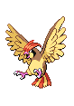

-
Bulbasaur #001

- Grama
- Veneno
Há uma semente de planta em suas costas desde o dia que este pokemon nasce. A semente cresce lentamente.
-
Ivysaur #002

- Grama
- Veneno
Quando o bulbo em suas costas cresce, ele parece perder a capacidade de ficar em suas patas traseiras..
-
Venusaur #003

- Grama
- Veneno
Sua planta floresce quando está absorvendo energia solar. Ele fica em movimento para buscar a luz solar.
-
Charmander #004

- Fogo
Tem preferência por coisas quentes. Quando chove, diz-se que o vapor jorra da ponta da cauda
-
Charmeleon #005

- Fogo
Tem uma natureza bárbara. Em batalha, ele chicoteia sua cauda ardente e corta com garras afiadas.
-
Charizard #006

- Fogo
- Voador
Ele cospe fogo que é quente o suficiente para derreter pedregulhos. Pode causar incêndios florestais ao soprar chamas.
-
Squirtle #007

- Agua
Quando retrai seu pescoço longo em sua concha, ele esguicha água com força vigorosa.
-
Wartortle #008

- Agua
É reconhecido como um símbolo de longevidade. Se sua casca tem algas, esse Wartortle é muito antigo.
-
Blastoise #009

- Agua
Ele esmaga seu inimigo sob seu corpo pesado para causar desmaios. Em um beliscão, ele se retirará dentro de sua concha.
-
Caterpie #0010

- Inseto
Para proteção, ele libera um mau cheiro horrível da antena em sua cabeça para afastar os inimigos.
-
Metapod #0011

- Inseto
É esperar o momento para evoluir. Nesta fase, ele só pode endurecer, por isso permanece imóvel para evitar o ataque.
-
Butterfree #0012

- Inseto
- Voador
Em batalha, ele bate as asas em grande velocidade para liberar poeira altamente tóxica no ar.
-
Pidgey #0013

- Normal
- Voador
Muito dócil. Se atacado, muitas vezes chuta areia para se proteger em vez de revidar.
-
Pidgeotto #0014
- Normal
- Voador
Este Pokémon é cheio de vitalidade. Ele voa constantemente ao redor de seu grande território em busca de presas.
-
Pidgeot #0015

- Normal
- Voador
Este Pokémon voa na velocidade de Mach 2, procurando presas. Suas grandes garras são temidas como armas perversas.
-
Growlithe #0016

- Fogo
Tem uma natureza corajosa e confiável. Sem medo, enfrenta inimigos maiores e mais fortes.
-
Arcanine #0017

- Fogo
Um antigo pergaminho de imagens mostra que as pessoas eram cativadas por seu movimento enquanto corria pelas pradarias.
-
Pikachu #0018

- Eletrico
Quando está irritado, ele imediatamente descarrega a energia armazenada nas bolsas em suas bochechas.
-
Raichu #0019

- Eletrico
Sua cauda descarrega eletricidade no solo, protegendo-o de ser chocado.
-
Abra #0020

- Psiquico
Este Pokémon usa seus poderes psíquicos enquanto dorme. O conteúdo dos sonhos de Abra afeta os poderes que o Pokémon empunha.
-
Kadabra #0021

- Psiquico
Usando seu poder psíquico, Kadabra levita enquanto dorme. Ele usa sua cauda mole como travesseiro.
-
Alakazam #0022

- Psiquico
Tem um nível incrivelmente alto de inteligência. Alguns dizem que Alakazam se lembra de tudo o que lhe acontece, desde o nascimento até a morte.
-
Galinha #0023
- Normal
Tem a habilidade de caçar pequenos insetos e pode se tornar um bom ensopado.
-
Porco #0024
- Normal
Come de tudo mas não é muito chegado a banho.
-
Link #0025
- Humano
- Guerreiro
Um guerreiro da lenda de Zelda.
-
Goku #0026
- Humano
- Guerreiro
Um guerreiro super sayajin (Acho que é assim que escreve).
-
Mario #0027
- Humano
It's me Mario (Alguém traduz ai pra mim)
-
Sonic #0028
- PorcoEspinho
Um carinha bem rápido, que vira super sonic e que seria um ótimo entregador de pizza.
-
Saitama #0029
- Humano
- Herói
Um carinha que é herói por diversão. (Dica: não puxe briga com ele)
-
Gatinho #0030
- Pet
Um gatinho muito legal.